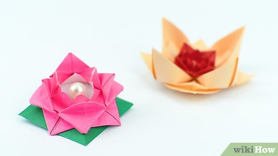

Origami is the craft (or art) of folding paper into shapes and sculptures. The word derives from the Japanese word 'oru' which means "to fold", and 'kami' which means "paper".
Mathematics need to be made more visual for some learners and here are some advantages of using origami in the Mathematics classroom.
- Origami adds physical involvement to the learning process.
- Mathematical learning is enhanced through active involvement.
- Paper folding activities can lead to lively discussions among learners.
- Learners that have a concrete learning preference get the opportunity to see and feel while they learn.
- Hands-on activities assist learners to build their own mathematical concepts.
- Origami is a useful tool for teaching and assessment.

How to make a Origami Flower
Part 1 : Basic Folds
- Create guidelines by folding a square piece of paper in half.
- Unfold and repeat in the other direction.
- Unfold.
You should now have a square piece of paper with creases/guidelines that intersect perpendicularly in the center.
- Fold each corner inward toward the center.
- Repeat the previous step for each corner.
Part 2 : Creating a Flower
- Fold each corner of the blintz base inward toward the center.
- Repeat for each corner.
- Make another blintz fold.
- Flip the square over and make another blintz fold.
- Make the final folds.
- Repeat for each corner.
- Pull up your first petals.
Keeping the object oriented so that you can see your most recent folds, feel around the bottom of the square for the top layer of flaps. Gently pull-up each flap one at a time, working around the smaller partial folds you made in steps five and six. Repeat for each flap/petal.
- Pull up the next round of petals.
- Pull up the last round of petals.

How to make a Origami Boat
Part 1 : Basic Folds
- Start with your rectangular paper, orient it vertically, with the long edges going up and down. Fold the bottom half up to the top.Fold the bottom right corner over to the left corner and make a small pinch, just enough to crease the paper. Open it back up.
- Using the crease as a guide, fold the left and right bottom corners up and to the middle. Flatten the folded pieces down. Rotate the paper. Fold one layer from the bottom up along the bottom of the front flaps.
- Flip the paper over to the other side. Fold the bottom edge up in the same way. Unfold, and then fold the bottom right corner in along the crease you made. Repeat on the bottom left flap.
- Re-fold the bottom edge back up. Open the bottom of the model. Look at the corners. Flatten and then insert the overlapping flap on the left underneath the right section.
- Fold one layer up to the top. Repeat on the back. Open the bottom of the model.
Part 2 : Foldings to Boat
- Pull apart the left and right flaps. Flatten it out, in the shape of a boat. Open it slightly. The triangle in the middle resembles a sail.